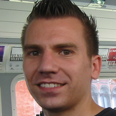

RTB and Big Data - where Erlang and Hadoop meet
Dennis MeyerChief Architect @ AOL
RTB and Big Data - where Erlang and Hadoop meet
RTB (Real-time Bidding) is an on-the-fly auctioning system for delivering Ads. The key players that partake in such a solution are SSPs (Supply Side Platform) and DSPs (Demand Side Platform). At Adtech we have build an SSP solution that allows publishers to get better value for their advertisements. This solution however brings its own challenges where the key components need to support this on large scale. To be able to process billions of bid requests per day the realtime components are build in Erlang while the data part is based on Hadoop. This talk will give insights on how we use Erlang to build our RTBSelector fleet supporting horizontal scaling. In addition we’ll talk about the Big Data architecture that takes care about the downstream processing.
SlidesVideo
About Dennis
Dennis Meyer is Chief Architect at AOL working in Digital Advertising. His focus is the data area where more than 10BN events per day are processed. Current projects include a cluster based forecasting system and a Hadoop based reporting system. Beside snowboarding and mountain biking he loves big data technologies in all their diversity - including NoSQL, NewSQL, grid computing and complex event processing.